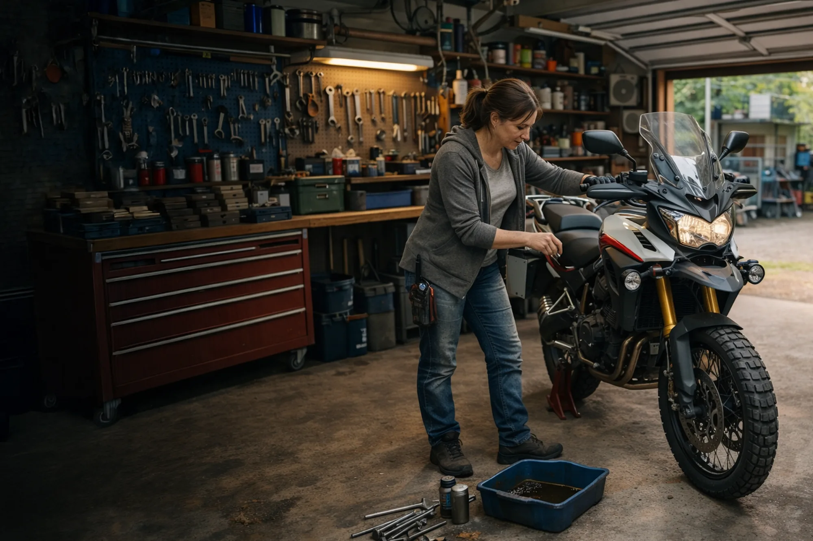

Gratis hulpmiddelen voor voertuigonderhoud
Praktische checklists, planners en handleidingen voor het bijhouden van je auto of motor. Direct te gebruiken, geen registratie nodig.
Een goede onderhoudshistorie begint met weten wat je wanneer moet doen en wat je moet bewaren. GarageBook biedt deze gratis resources als startpunt voor eigenaren die hun onderhoud serieus willen bijhouden.
- Zes gratis checklists en planners
- Geschikt voor auto en motor
- Afdrukbaar of digitaal te gebruiken
Alle gratis checklists en hulpmiddelen
Kies de resource die bij jouw situatie past. Alle pagina's zijn gratis beschikbaar en afdrukbaar.

Onderhoudschecklist auto
Alle periodieke onderhoudspunten voor je auto op een rij: olie, banden, remmen, APK, distributieriem en meer. Afdrukbaar.
Bekijk checklist
Onderhoudschecklist motor
Periodiek onderhoud, seizoensstart, winterstalling en ketting: alles wat je motor nodig heeft, overzichtelijk op een lijst.
Bekijk checklist
Welke onderhoudsdocumenten bewaar je?
Facturen, APK-rapporten, garantiebewijzen: welke documenten moet je bewaren, hoe lang en waarom? Overzicht met checklist.
Bekijk gids
Checklist voor verkoop van je voertuig
Stap voor stap: documenten verzamelen, technische controle, presentatie en een eerlijke verkoopprijs bepalen.
Bekijk checklist
Onderhoudshistorie checklist
Wat maakt een goede onderhoudshistorie? Checklist voor eigenaren, kopers en verkopers om de kwaliteit van een tijdlijn te beoordelen.
Bekijk checklist
Jaarlijkse onderhoudsplanning
Maandoverzicht voor periodiek onderhoud: wanneer doe je wat voor een gemiddelde auto of motor? Met jaarlijkse en vaste intervaltaken.
Bekijk plannerVan checklist naar aantoonbare onderhoudshistorie
Een checklist afdrukken is een begin. Een digitale tijdlijn per voertuig is wat je over vijf jaar nog hebt.
GarageBook combineert alles wat je in de checklists terugvindt in één overzicht per voertuig: beurten met datum en kilometerstand, bewijs via facturen en foto's, kosteninzicht en een tijdlijn die overdraagbaar is bij verkoop. Gratis, zonder download, in het Nederlands.
Lees meer over het digitaal onderhoudsboekje, de onderhoudshistorie auto, de onderhoudshistorie motor of hoe je een onderhoudshistorie opbouwt.
Start gratis met GarageBook
Alles in één overzicht bijhouden?
GarageBook is gratis, werkt voor elke auto of motor en bouwt automatisch een overdraagbare tijdlijn op.
Start gratis met GarageBook